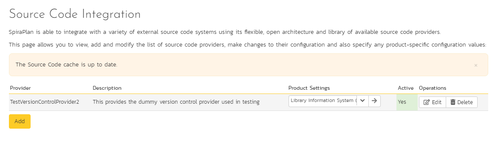
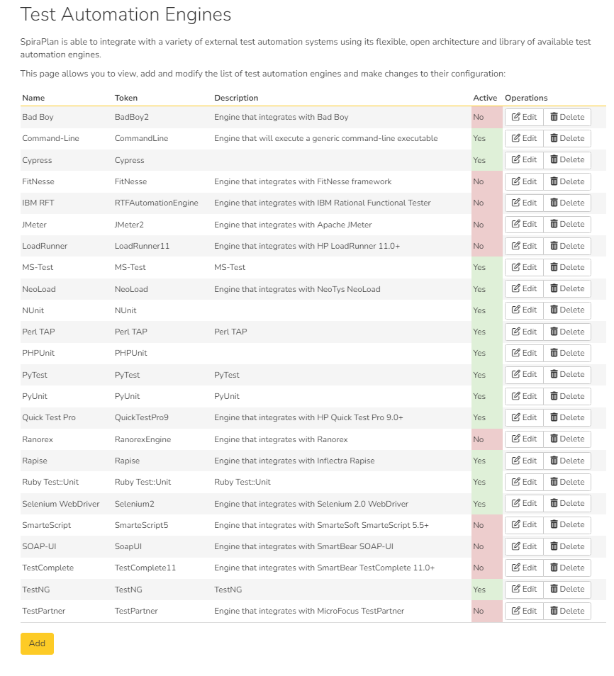

System: Integration
Data Synchronization
SpiraPlan® is capable of synchronizing its data with a variety of other systems, including but not limited to requirements management systems and standalone bug-tracking tools. The various integration plug-ins for SpiraPlan® and the steps for configuring the data-synchronization settings are described in the SpiraTest External Bug-Tracking Integration Guide.
If you are synchronizing data between SpiraPlan® and one of these other systems, you can click on the 'Data Synchronization' administration page at any time and view a list of all the data-synchronizations taking place, together with the status and date/time of last synchronization:

In the example above, we have four plug-ins active, with incidents being exported into JIRA, Bugzilla, FogBugz and Microsoft Team Foundation Server. The data of last sync and the status indicate if there are problems with the plug-in.
The 'Refresh' button allows you to refresh the status of the page to ensure that you are seeing the most up to date information. In certain circumstances you may want to reset the date of last sync and force a particular plug-in to examine all the records in the system to see if any were not synchronized - clicking on the 'Force Complete Re-Sync' button will achieve this. The recommended procedure for forcing a re-sync is to temporarily stop the SpiraPlan Data-Sync background Windows service, click the button to reset the last-sync date, and then start the service. This will ensure that the resetting doesn't happen mid-sync.
Version Control Integration (On-Premise Customers Only)
This section refers to the functionality available to on-premise customers of SpiraPlan. If you are using the cloud / hosted version of SpiraPlan, please refer to TaraVault Configuration instead.
SpiraPlan® is capable of integrating with a variety of Version Control (VC) / Software Configuration Management (SCM) tools such as Git, Subversion, CVS and TFS. This allows you to browse the source code repositories using the SpiraPlan web interface, and more importantly link revisions in these tools to artifacts in SpiraPlan. This provides the end-to-end traceability from code commits/check-ins to the tasks, incidents and requirements that necessitated the code change.
The information on using the various version control providers for SpiraPlan® and the steps for configuring the provider-specific settings are described in the SpiraPlan/Team Version Control Integration Guide.
To configure a version control provider, you need to click on the Administration > Integration > Version Control link in the Administration navigation to bring up the list of configured version control providers:

By default the only provider listed will be the TestVersionControlProvider which is used for demonstration purposes only, and can be deleted from a production system by clicking on the "Delete" button to the right of it.
To add a new version control provider, click the "Add" button to enter
the Plug-in details page. The fields required are as follows:

-
Name: The name of the version control provider that you're adding. This needs to match the name of the Plug-in DLL file that you're using (see the SpiraPlan/Team Version Control Integration Guide for more details on your specific tool)
-
Description: The description is for your use only, and does not affect operation of the plug-in.
-
Active: If checked, the plug-in is active and able to be used for any product.
-
Connection Info: This field holds the root of the repository for any product accessing the plug-in, unless overridden in the Product Settings. Use the syntax that is described for your tool in the SpiraPlan/Team Version Control Integration Guide)
-
Login / Password: The user id and the password of the user to use while accessing and retrieving information from the version control system.
-
Other Fields: The other fields (Domain, Custom1 -- Custom5) are provider-specific and will be described in the appropriate section of the SpiraPlan/Team Version Control Integration Guide.
When finished, click the "Insert" button and you will be taken back to the Version Control integration list page, with new provider listed as an available plug-in:

To edit the settings for an existing version control provider, click on the "Edit" button next to the name of the provider and you will be able to edit the same settings that were shown above when you first created it.
Now, you may want to change some of the settings on a per-product basis. For example you may have different repositories that you want to link to each product. You still enter the base settings for the provider as illustrated above, but then you can override specific settings for each product.
To do this, click on the "Product Settings" button next to the provider in question, which will take you to the screen discussed in 3.6.4. below.
Test Automation
SpiraPlan® can be used to manage the development, scheduling and execution of automated unit, functional and load tests written using a variety of test automation engines (e.g. HP QuickTest Pro, SmarteScript, TestComplete, etc.). This section allows you to configure the different engines that are available in your environment so that the testers know which tools they can use to schedule tests with.
The information on using the various test automation engines for SpiraPlan® and the steps for configuring the engine-specific settings are described in the SpiraTest/Team RemoteLaunch Automated Testing Integration Guide.
To configure a test automation engine, you need to click on the Administration > Integration > Test Automation link in the Administration navigation to bring up the list of configured test automation engines:

To add a new test automation engine, click the "Add" button to enter the Automation Engine details page. The fields required are as follows:

-
Name: The name of the test automation engine that you're adding. This can be set to any name of your choice that would make sense to your users.
-
Description: The description is used for any comments or additional information that you need to use to describe the automation engine.
-
Active: If checked, the automation engine is active and able to be used in any product.
-
Token: This needs to match the name of the Automation Engine DLL file that you're using (see the SpiraTest/Team Automated Testing Integration Guide for more details on your specific tool) for the specific automation engine.
When finished, click the "Insert" button and you will be taken back to the test automation engine list page, with new automation engine listed.
To edit the settings for an existing test automation engine, just click on the "Edit" link next to the name of the engine and you will be able to edit the same settings that were shown above when you first created it.

Once you have made the appropriate changes, click the [Save] button to commit them.
You are now ready to use SpiraPlan® in conjunction with the test automation engine you added. For details on how to use the test automation features of SpiraPlan, please refer to the SpiraPlan® User Manual.